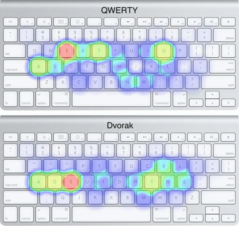

40% Mechanical Keyboard Project
Introduction
What is a 40% Mechanical Keyboard?
For the uninitiated, a mechanical keyboard is a keyboard that is made up of individual mechanical switches for each key, as opposed to a membrane keyboard which has a single piece of rubber that is pressed down to register a key press. While it is technically a slower keyboard as the fingers have to travel further down to press the keys, it allows for more customization of the design, as well as sounding much nicer. These keyboards are organized into multiple categories, starting with full-size or 100% (including a number pad), and progressively getting smaller, with the percentage representing the size of the keyboard compared to a full-size keyboard. A 40% keyboard is what one would consider to be the smallest usable keyboard, with it only including the characters, arrows, and a few modifiers (shift, control, alt, etc.).
Where did this interest originate?
This interest started back in 2021 while browsing Thingiverse when I came across the Wakizashi Keyboard. I was immediately hooked and decided that I would make one. After purchasing the necessary parts and printing the rest, I had the tedious task of soldering the layout by what is called "hand wiring". This is where you connect all of the switches in a matrix, with columns and rows that are connected to a microcontroller, which can detect when the switches close the circuit, and tell the computer which key was pressed. A few very long hours of soldering countless junctions later, I had myself a 40% keyboard. Not having access to a resin printer, I had to use an FDM printer to print out the keycaps, which did not have sufficient precision to fit on the stems of the switches, which was time-consuming and still left the keycaps rubbing with the case. Along with some firmware compatibility and soldering issues, this led to it becoming a dust collector, finding its place neatly in a drawer.
Why do this project?
Besides the fact that it's something that I find really interesting and formative, I decided to also try and learn this keyboard and become proficient in it because of the following reasons:-
Portability
What really interested me about these tiny keyboards (and away from larger alternatives) was being able to have a keyboard that I could carry around with me everywhere, letting me get very good at typing with a specific layout that works best for me. -
More optimized for touch typing & Comfort
The big selling point for people looking into this form factor when it comes to ergonomics and typing for long sessions is the comfort that it allows and how it is a lot better if trying to touch type more efficiently. This is because of the simple fact that every single key is literally one key away, meaning that you do not need to stretch your fingers every time you reach for "backspace". Additionally, since all of the keys that you don't get at "face value" are hidden behind layers, and they're all a key away, you don't have to take your eyes off of the screen when going for the function row. What this really means is that it allows you to be much more precise on keys that are not in the direct vicinity of your fingers. -

Excuse to learn Dvorak
In case you didn't know, the traditional keyboard layout (qwerty) was designed in the late 1800s to prevent typewriter jamming because of two letters being typed right next together in quick succession. Since we no longer have that problem, people went out and designed layouts that are more optimized for comfort and overall efficiency. Among these, Dvorak is the most popular. To give you an idea of what I mean: on Qwerty, 32% of keystrokes are done on the home row (the middle row, where the "dimples" are), while 70% of keystrokes on Dvorak are on the home row. What this means is that your fingers move a lot less up and down, making it more comfortable, and healthy in the long run.
The image to the right is a heatmap of keys used by frequency, with red representing the most used key, and light blue representing the least used keys.
Design & Manufacturing

How was this keyboard designed?
Some years later in 2025, while searching through an electronics recycling, I found what appeared to be a cashier that used mechanical switches for the keys. After painstakingly desoldering all the switches, I was left with 48 switches and keycaps. After some research, I found that a very popular keyboard with the number of switches that I had harvested was the "Planck". After specifying the layout on a keyboard configurator, I was able to plug it into a website that generates the plate design according to the switch geometry (which is standardized). I then dropped this into Onshape along with a 3d model of the microcontroller that I would be using, and designed a case that would fit the plate and microcontroller using the leftover hardware from my Nano Long Range Project. I decided to use a "captive nut" design to hold the case together, where the nuts are held in place by a tapering hexagonal hole, which allows for the use of nuts without a very tight tolerance during 3d printing (preventing the rattling issue that I had during the previous build). This then got 3d printed using very overkill carbon fiber reinforced nylon.
Making the keyboard talk to the computer!
Following the very convoluted experience of programming my first keyboard using QMK on the Arduino Pro micro, I knew there had to be a better alternative. After looking around for a microcontroller with a usb-c connector and hopefully better firmware, I found that people were starting to use the RP2040 chipset, which could be found in the Waveshare RP2040-zero. Upon more research, I found that there's an alternative to QMK by the name of KMK, which interacts with the computer as both an HID device (Keyboard) and a storage device, allowing you to make changes to the configuration of the keyboard while it is still on, unlike QMK where you had to re-flash the firmware with the changed configuration every time, resetting the keyboard in the process. I also found that there was a program by the name of POG that makes the configuration process a lot easier by turning it into a step-by-step installation process and graphical configuration workspace.
Soldering together the keyboard
With all the components figured out, the time had come to solder the keyboard! This starts by soldering the diodes to the switches (allows for multiple keys pressed at once), followed by soldering them to the row wires. The same is then done in the vertical direction by soldering the switches together with smaller gauge wires in columns. This is followed by wiring each of the rows and columns to a pin on the microcontroller that is later specified in KMK. Then, all that is left is to secure the microcontroller to the base and assemble the case with the very excessive 24 pairs of m2 screws and nuts.Conclusion
What would I do differently?
If I had the opportunity to start this project from the absolute beginning, I would change the following aspects of the physical design:-
Increase frame rigidity
While decreasing the thickness of the printed parts of the frame led to a very light final product, making it ever more portable, if I were to design this keyboard again, I would like to include some form of internal material that gives it structural rigidity, such as carbon fiber. The only issue with this approach is that while I do have a piece of carbon fiber that I found at the same place as the switches and keycaps, I do not have any safe way to cut it into a shape that could be used to improve the rigidity of the keyboard, and I personally don't want to have carbon splinters in my lungs from doing it unsafely. -
Improve microcontroller holder
Another pretty big issue with the final design that I put together was the way that I mounted the microcontroller to the bottom plate of the keyboard. Since the microcontroller did not come with mounting holes, I had originally planned to use very strong double-sided tape, but upon mounting it using that approach, I found that since the bottom side of the microcontroller was not entirely flat, the tape was actively unsticking itself, trying to flatten. What I ended up doing was drilling undersized m2-sized holes so that an m2 screw would self-tap into the hole. The screws then have a washer on the end that wedges the microcontroller against the base. While this works and does not inhibit the functionality of the keyboard, it does not look professional at all, with all the screws slightly off perpendicular. I would like to change the base to make space for captive nuts as I had done for connecting the base of the case to the plate, and planning where I would solder the rows and columns to make the screws hold the microcontroller down "non-precariously" on the edges, rather than on the corners. -
Improve cable routing
Due to not thinking about the fact that wires take up space, I did not leave enough room to hide the wires coming from the rows and columns to the microcontroller. I have done this, which would have left a much neater final product.

What keyboard layout does it use?
To the left is the layout that I am using as of August 2025 (had used previous layout since June).Without modifiers, the layout in the middle is active. If you press the green button to the right of the space bar, you will momentarily get the top layout (will stay on until you release the green button). Likewise, if you press the orange button, you will momentarily get the bottom layout until you release the orange button. While this might seem like a lot of things to remember, the point of this is not to have everything clear and visible, but "hidden and close".
Upon noticing that I only pressed the space bar with my right hand thumb, and that it was "a lot of effort" to take my hand off of the keyboard in order to make a small adjustment to the mouse, an addition that I made to this in August of 2025 was to add the top layer (in blue) which made it so that the keyboard would act as a mouse, with position being controlled by the four fingers of my right hand in the home row (as with the regular arrow keys in the bottom right), the scrolling being controlled two buttons in the top row by the middle and ring fingers. In the right hand, I put the right, middle, and left click, as well as the shortcuts for navigating between tabs of different programs "ctrl+tab" and "ctrl+shift+tab". As a backup in case I could only use my right hand, I also added the mouse keys under the navigation keys.